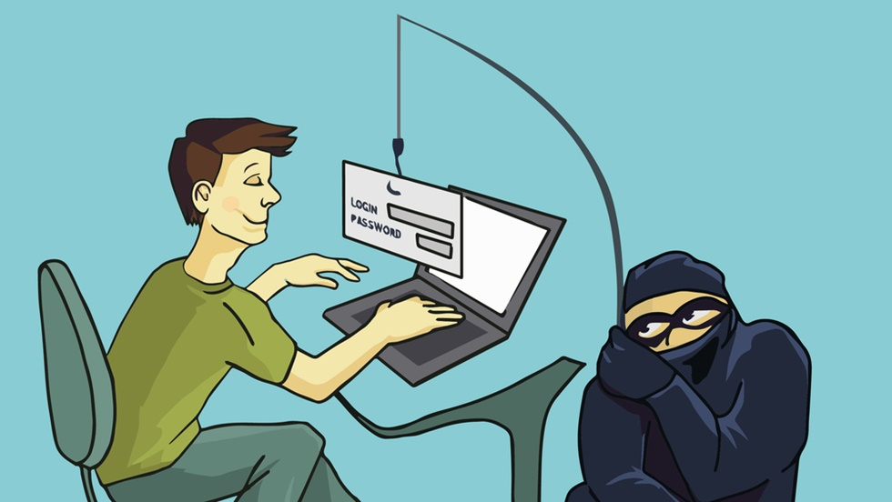
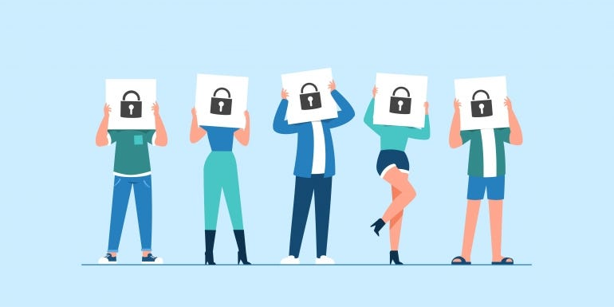
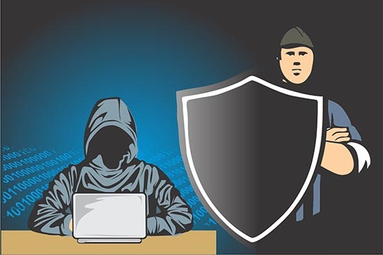

Apa Itu Infringements of privacy?
Infringement of privacy merujuk pada situasi di mana informasi pribadi seseorang disalahgunakan, diakses, atau dibagikan tanpa izin yang sah. Fenomena ini sering kali terjadi melalui pengumpulan data tanpa persetujuan, penyebaran informasi pribadi secara tidak sah, atau pemantauan yang tidak diinginkan
Bentuk Kejahatan Cyber yang terkait dengan Infringement of Privacy
1. Pencurian Identitas (Identity Theft)
Penggunaan informasi pribadi seseorang tanpa izin untuk tujuan penipuan atau kegiatan ilegal lainnya.
Contoh Pencurian Identitas:
Pemalsuan akun palsu media sosial
Mencatut foto dan melakukan penipuan via WhatsApp
Penipuan dengan cara membajak email nasabah bank
2. Pelanggaran Keamanan Data (Data Breaches)
Akses ilegal atau tidak sah terhadap basis data yang berisi informasi sensitif atau pribadi yang dapat menyebabkan pencurian atau pengungkapan data tersebut.
Contoh Pelanggaran Keamanan Data:
Pembobolan Data Kominfo
Peretasan Website Kejagung RI
Pencurian Data Polri
3. Pengintaian (Surveillance)
Pengawasan atau pemantauan yang tidak sah terhadap individu atau aktivitasnya tanpa persetujuan yang sah.
Contoh Pengintaian:
Footprinting atau pencarian data
Gaining access
Memata-matai data
Motif Infringement of Privacy
1. Keuntungan finansial
• Motif ini mungkin muncul ketika informasi pribadi diakses atau disalahgunakan untuk keuntungan finansial, seperti dalam kasus pencurian identitas atau penjualan data pribadi kepada pihak ketiga.
2. Tujuan komersial
• Perusahaan atau organisasi mungkin melanggar privasi pengguna untuk tujuan komersial, seperti pengumpulan data pengguna untuk analisis pemasaran tanpa izin atau penyalahgunaan data konsumen untuk kepentingan bisnis.
3. Ambisi politik atau keamanan
• Dalam konteks keamanan nasional atau politik, pemerintah atau kelompok tertentu mungkin melakukan pelanggaran privasi untuk memantau atau mengawasi aktivitas individu atau kelompok yang dianggap sebagai ancaman.
4. Kurangnya kesadaran privasi
• Beberapa pelanggaran privasi terjadi karena kurangnya kesadaran akan pentingnya privasi, baik oleh individu maupun organisasi yang tidak memperhatikan kebutuhan akan perlindungan data pribadi.
5. Teknologi dan keamanan yang rentan
• Kelemahan dalam sistem keamanan atau celah teknologi dapat menyebabkan pelanggaran privasi, seperti kebocoran data akibat serangan siber atau penggunaan teknologi tanpa memperhatikan risiko keamanan.
6. Pelecehan atau pengawasan
• Motif ini muncul dalam konteks pengawasan atau pelecehan terhadap individu atau kelompok tertentu tanpa izin mereka, sering kali terjadi dalam kasus stalking atau pengawasan ilegal.
Cyberlaw Infringement of Privacy
Aspek Cyberlaw yang Terkait dengan Infringement of Privacy
1. Undang-Undang Perlindungan Data Pribadi
• Cyberlaw mengatur tentang pengumpulan, penggunaan, dan penyimpanan informasi pribadi pengguna oleh organisasi dan perusahaan.
• Undang-undang ini menetapkan standar dan kewajiban yang harus dipatuhi oleh entitas yang mengumpulkan dan memproses data pribadi.
2. Perlindungan Terhadap Keamanan Data
• Cyberlaw memiliki ketentuan-ketentuan yang menetapkan standar keamanan data agar informasi pribadi tidak dapat diakses atau dicuri dengan mudah.
• Undang-undang ini mengatur kewajiban perlindungan data bagi entitas yang menangani informasi pribadi.
3. Hukuman terhadap Pelanggaran Privasi
• Cyberlaw menetapkan sanksi dan tindakan hukum terhadap individu atau organisasi yang melanggar privasi dengan cara seperti pencurian identitas, penyebaran informasi pribadi tanpa izin, atau pelanggaran terhadap keamanan data.
4. Hak Privasi Pengguna
• Cyberlaw melindungi hak privasi individu dalam lingkungan digital, termasuk hak untuk mengetahui bagaimana data mereka digunakan, hak untuk menghapus atau mengoreksi informasi yang tidak akurat, dan hak untuk menolak penggunaan data mereka dalam beberapa kasus.
5. Regulasi Platform dan Penyedia Layanan
• Cyberlaw menetapkan tanggung jawab platform digital dan penyedia layanan terkait dengan perlindungan data pengguna yang mereka tangani atau kelola.
6. Kepatuhan dan Penegakan Hukum
• Cyberlaw memastikan adanya prosedur hukum yang dapat diterapkan untuk menangani pelanggaran privasi, termasuk penyelidikan, penegakan hukum, dan sanksi terhadap pelaku pelanggaran privasi.